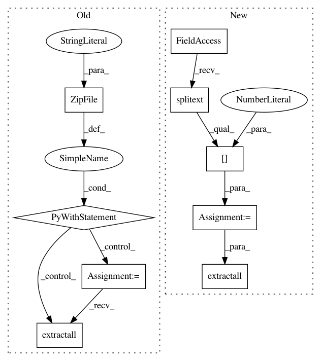

93fde518ce45a1373c4b635c15e25312b2cc3a0f,chainercv/datasets/sintel/sintel_dataset.py,,_get_sintel,#,18
Before Change
download_file_path = cached_download(url)
with zipfile.ZipFile(download_file_path, "r") as z:
z.extractall(data_root)
return data_root
class SintelDataset(chainer.dataset.DatasetMixin):
After Change
return data_root
download_file_path = utils.cached_download(url)
ext = os.path.splitext(download_file_path)[1]
utils.extractall(download_file_path, data_root, ext)
return data_root
class SintelDataset(chainer.dataset.DatasetMixin):
In pattern: SUPERPATTERN
Frequency: 3
Non-data size: 9
Instances
Project Name: chainer/chainercv
Commit Name: 93fde518ce45a1373c4b635c15e25312b2cc3a0f
Time: 2017-03-10
Author: yuyuniitani@gmail.com
File Name: chainercv/datasets/sintel/sintel_dataset.py
Class Name:
Method Name: _get_sintel
Project Name: chainer/chainercv
Commit Name: 93fde518ce45a1373c4b635c15e25312b2cc3a0f
Time: 2017-03-10
Author: yuyuniitani@gmail.com
File Name: chainercv/datasets/online_products/online_products_dataset.py
Class Name:
Method Name: _get_online_products
Project Name: chainer/chainercv
Commit Name: 93fde518ce45a1373c4b635c15e25312b2cc3a0f
Time: 2017-03-10
Author: yuyuniitani@gmail.com
File Name: chainercv/datasets/unite_the_people/unite_the_people_dataset.py
Class Name:
Method Name: get_unite_the_people